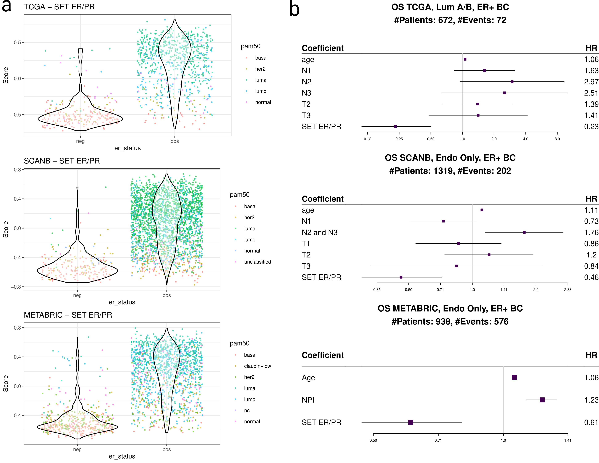
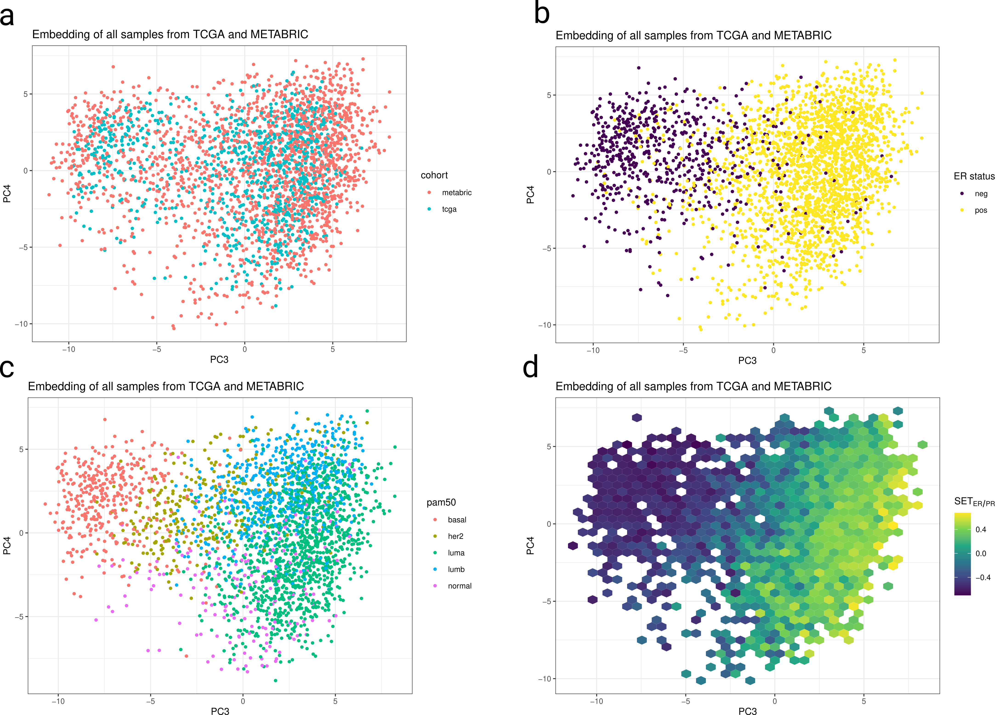

Molecular landscape: a new framework for personalized medicine in Breast Cancer
Abstract
Introduction
Breast cancer is the most commonly diagnose tumor disease in the world (1). It is also a very heterogeneous disease that can be subdivided in different subtypes. Patients that are diagnosed with breast cancer are classified based on the expression of the estrogen, progesterone receptors and HER2 membrane protein. The estrogen receptor positive (ER+) breast cancer subtype is the most frequent found in clinical practice (2). Tumor cells of this subtype contain the estrogen receptor whose main mechanism is the target of selective estrogen receptor modulator (SERM), selective estrogen receptor degrader (SERD) and aromatase inhibitors (AI). The degree of the expression of the protein can range from 1% to 100% according to ASCO guidelines (3). It has been shown that the patients in the low spectrum of ER positivity, from 1% to 10%, do not benefit as much as patients with 10% to 100% of ER positive cells in the tumor (4).
Transcriptomics and genomics have revolutionazed how cancer research is done. The new related tools opened the option to better understand the molecular underpinnings of cancer biology. In breast cancer, microarray technologies and RNA-sequencing have been used to develop gene signatures that are able to assign a risk score, usually for node-negative, post-menopausal and ER+ BC patients. The risk score is based on survival data found in the literature and the higher the risk score of a patient, the higher the benefit of additional chemotherapy besides the first-line therapy, such as aromatase inhibitors. Several of these signatures are already available to be used in hospitals (5–9). Moreover, some of the risk scores are already recommended in international guidelines (10). These signatures though do not provide a possible explanation on why a patient should receive additional therapy. These signatures are composed of several submodules, they are in most of the cases related to estrogen, proliferation, HER2 and invasion. In some of the cases the risk score is more strongly associated with the estrogen module and in other cases to the proliferation module (11). There is still a lack of understanding of the patient’s tumor molecular biology. There are challenges to overcome in the pathway analysis for patients individually and how to compare patients molecularly when considering complete transcriptomics data. There is no tool that allows to integrate patients in a continuous way. Usually integration is a one step procedure and cannot be updated. The usual tools are (12–14) and they do not provide batch effect removal for new samples. The only way is to re-run the procedure together with the new sample. The problem of doing this is usually you don’t have enough samples to estimate batch effects across groups and therefore correct it.
We propose here a framework for personalized medicine and the understanding of the signaling pathways in a patient level. By developing a normalization and projection technique, we show that it is possible to integrate publicly available molecular datasets, such as TCGA, SCAN-B, METABRIC and microarray data of some patients from the POETIC trial (15–18), and that it is possible to compare patients in a neighborhood of the projected data, providing a context to compare patients and better understand the biology of the tumor. Moreover, we propose to use the different gene sets from the hallmarks collection of the Molecular Signature Database (MSigDB) (19,20) to understand the biology of the tumors in patient and neighborhood levels.
Methods
Cohorts
The breast cancer cohorts TCGA, SCANB, METABRIC and POETIC (15–18) were used to calculate the PCA embeddings and scores. The samples are of primary breast cancer samples from different molecular subtypes and age distribution. TCGA was download from Firebrowse, SCANB data was downloaded from GEO (accession code GSE96058) using the package GEOquery (21) in R along the clinical data from the https://oncogenomics.bmc.lu.se/MutationExplorer/ website. METABRIC was downloaded directly from cBioPortal. POETIC data was downloaded from GEO (accession code GSE105777) using the R package GEOquery. More details about the download and preprocessing steps are described in https://chronchi.github.io/transcriptomics.
Selection of highly variable genes
In order to perform the PCA, we sub selected 1000 common and highly variable genes in the TCGA and METABRIC cohorts. For each gene and in each cohort separately, the standard deviation of that gene was calculated. Then an average standard deviation was calculated using the formula below.
\[ \text{average sd} = \sqrt{\frac{(sd_{TCGA}^2 + sd_{METABRIC}^2)}{k}} \]
qPCR-like normalization
Since samples are coming from different platforms, they need to be scaled in a way that they are comparable. For this we developed a new way to scale the data based on the ranking of the samples. Given a list of 44 stable genes across different cancers (22) and the 1000 genes selected previously, all genes were ranked from lowest to highest expression for each sample separately and the rankings were divided by the average ranking of the stable genes. Stable genes are considered the housekeeping genes.
PCA embedding
Using the normalized data, a total of 1000 random samples coming from TCGA and METABRIC were selected to perform the initial PCA. This is an unsupervised learning method, therefore there is no need to label the samples with respect to some category. The package PCAtools (23) in R was used to perform the PCA and to obtain the loadings for downstream analysis. PCA was used with centering and scaling set to FALSE. The embedding for new individual samples is obtained by multiplying the loadings matrix with the normalized data for that sample. Since the normalization procedure is performed sample-wise, this step is independent of the number of samples. If there are missing genes in a sample, the normalization is performed and the missing genes are padded with 0.
Scoring strategies
For the 4 big cohorts, TCGA, SCANB, METABRIC and POETIC, GSVA (24) was applied along with the \(SET_{ER/PR}\) signature (25) and the hallmark collection from the molecular signature database (19,26). Default parameters were used in the gsva function from the GSVA package.
Average neighborhood scores
In order to calculate the posterior distribution of the average scores in each neighborhood, a linear regression witho only intercept was fit using rstanarm (27). The package tidybayes (28) was used to extract the draws and put them in a tidy format.
Code availability
The code used to generate all the analysis is available on https://github.com/chronchi/molecular_landscape. Descriptions for a docker image to reproduce the analysis are available on the github repository. An online version with a website containing all the analysis can be found on https://chronchi.github.io/molecular_landscape
Results
Estrogen receptor is a clinical continuous variable
We used three independent breast cancer molecular datasets (15–17) to calculate estrogen signaling scores. The estrogen signatures HALLMARK_ESTROGEN_RESPONSE_EARLY and HALLMARK_ESTROGEN_RESPONSE_LATE were extracted from the molecular signature database (19) and \(SET_{ER/PR}\) from (25). The individual scores for each patient sample are shown in Figure 1 (a) for each cohort stratified by estrogen receptor status. It shows the scores capture the differences between the two breast cancer subtypes as expected. Moreover, there is a wide range of values in the estrogen receptor positive (ER+) subgroup.
Cox regression was used to determine the hazard ratio of the estrogen signaling in overall survival (OS) for TCGA, SCANB and METABRIC and recurrence free survival (RFS) for METABRIC. Each survival analysis was done independently and adjusted for available clinical variables. Tumor size and number of lymph nodes were used for TCGA and SCANB cohorts. The Nottingham prognostic index (NPI) was used for METABRIC. Age was used in all cohorts as a clinical variable for adjustment. Only ER+ BC patients were used and when possible only those that received endocrine therapy. Figure 1 (b) shows the forest plots for each cohort individually when calculating the hazard ratio for the \(SET_{ER/PR}\) estrogen signaling signature. In all the three cases, the hazard ratio for \(SET_{ER/PR}\) was below 1, with values ranging from 0.23 to 0.61. There is moderate variability for each hazard ratio. This shows the continuous aspect of estrogen receptor status. For both estrogen pathways of the hallmark collection of gene sets, hazard ratios were below 1 in all cases (Table 1, supplementary material).
Single sample integration preserves relevant breast cancer properties
Since each patient has a different ER signaling score, we assumed that patients should be treated individually, not just binned in two big subgroups as ER+ and ER-. Therefore, it is important to consider each patient individually. We developed a single sample batch effect removal method (see methods section) to integrate microarray and bulk RNA-seq and create a molecular landscape. The advantage of the method is that given a new sample, it can easily be integrated with all the other previous samples without any retraining.
The first step is to normalize the samples to the same scale. The average ranking of housekeeping genes distribution is similar among the two RNA-seq datasets, SCAN-B and TCGA and their mean values are higher than the mean of the distribution on METABRIC (Fig S1a). Moreover the normalization preserves essential characteristics of the breast cancer biology (Fig S1b).
The biplot in Figure 2 (a) with the third and fourth components from TCGA and METABRIC samples shows that the samples are well integrated. All samples, including those using for training and validation, are plotted. The third components corresponds to the separation between ER+ and ER- BC patients in both cohorts (Figure 2 (b)). A combination of the third and fourth components shows a good distinction among the PAM50 molecular subtypes (Figure 2 (c)). The fourth component is mostly dividing the luminal A and luminal B subtypes, whereas the normal-like subtype is spread across the third and fourth component. This also highlights the fact that one cannot interpret the PCA locations globally, rather when comparing samples one should consider only its neighborhood.
As pointed out before, ER status should be considered continuous and not dichotomous, Figure 2 (d) shows a gradient of the ER signaling score \(SET_{ER/PR}\). The higher values are on the far right of the third component, going to negative values as one goes from right to left, i.e., moving from a more ER+ status to the ER-. There are other pathways driving the distinction between samples, such as G2M checkpoint, epithelial to mesenchymal transition, DNA repair and others (supplementary figure 2; 2.20 from book).

Embedding is robust to missing genes and generalized to a validation cohort
METABRIC and TCGA were used to train and validate the projections. SCANB was used as an external validation cohort. SCANB is well mixed with both METABRIC and TCGA samples (Figure 3 (a)). ER+ and ER- BC patients are well separated (Figure 3 (b)) and the procedure can also distinguish the molecular subtypes (Figure 3 (c)). As an RNA-seq cohort, it is expected that SCANB samples will be closer to TCGA than to METABRIC when removing batch effects, due to platform biases and initial scale of the genes. Biplot of PC1 and PC2 (Figure 3 (d)) shows that SCANB is closer to TCGA than to METABRIC. It is also in between the two cohorts. We also show that the embedding works for the SMC cohort (29) (supplementary figure 3; 3.14 from the book).
In order to check the robustness of the procedure, we redid all the pipeline 10 times with 10 random sets of patient samples from TCGA and METABRIC, simulating a cross validation process. The PCA embedding is invariant to rotation, translation and reflection (Figure 3 (e)). Another problem that arises with publicly available datasets, is the fact that there are missing genes. We try to understand the effect of missing genes in the embedding based on their loading values. Ideally if a low amount of genes with high loadings are missing, this should not affect very much the embedding. On the other hand, the more genes missing with high loadings, the more it will impact the embedding. We removed 200 genes in total with a varying proportion of top loading genes (ranging from 0 to 100% in a 5% step). The number of top loading genes missing from the dataset is key for the embedding (Figure 3 (f)). The higher the proportion the less precise the embedding is.

Molecular landscape is a tool to understand and explore patient heterogeneity
Since the molecular landscape relies in a single sample embedding, we can add samples from any cohort with relative good data. The POETIC trial (30) was a trial that evaluated the use of perioperative aromatase inhibitors in ER+, postmenopausal BC patients. Its primary endpoint was time to recurrence. They sent for microarray hybridization matched samples from baseline (before treatment) and at surgery (after an average of 14 days of treatment) (18). There are also untreated patients, used to control for sample processing artefacts. Moreover, the patients have matched Ki67 percentage levels, which can be considered an indication of how well a patient responded to the endocrine therapy. Patients with more than 5% of baseline Ki67 and a reduction of 60% upon endocrine therapy are considered responders, otherwise they are called non responders.
The molecular landscape can shed light on the differences between responders and non responders. We embedded the POETIC trial samples using the procedure (Figure 4 (a) left). The samples are spread across the whole molecular landscape, showing that patients indeed have different molecular biological properties. Furthermore, the POETIC samples are embedded closer to the METABRIC samples (supplementary figure 4; 4.3 from the book). Given the available information, the patients that are ER+ and in the left part of the landscape (ER- patients), are all non responders (Figure 4 (a) right). This highlights the importance to look more carefully to ER+ patients. We selected two patients, a responder and non responder that are close in the embedding (Figure 4 (b)) to highlight their molecular differences and see what is their context. Figure 4 (c) shows the average posterior distribution of the neighborhood for the responder patient. The responder patient has a ER signaling score higher than the average. On the other hand, the non responder has a smaller ER signaling score than the average (Figure 4 (d)) and also a higher androgen signaling score (Androgen response). Other pathways and their average posterior distributions are shown for both patients.

Discussion
Personalized medicine is a key topic in medicine. The goal of better understanding the molecular underpinnings of the diseases leads to a better allocation of treatments and resources in the patient care. We have shown here a possible framework to deal with personalized medicine in breast cancer in general with a focus on ER+ BC patients.
In general, estrogen receptor status is considered either a dichotomous or trichotomous state (3). Breast cancers are classified either in ER+ or ER- based on their protein expression levels and IHC. For those tumors that are ER+, they can be subdivided into low ER positive (1% < IHC% < 10%) and simply ER positive. Those that are into the low ER positive do not usually benefit as much on endocrine therapy. Here we show using cox regression and multiple big study cohorts (15–17) with both RNA-seq and microarray data, that ER status is more of a continuous rather than a categorical state. This can aid in treatment decision when evaluating the breast cancer. Several gene signatures already are being used, such as OncotypeDX, Mammaprint and Prosigna to assign chemotherapy for those patients with higher risk of recurrence (5–7). This score might be associated with the commercial signatures, as it has been shown that OncotypeDX’s estrogen module is highly correlated with the signature itself (11).
Integrating molecular data steaming from different sources is a challenge. On one hand batch effect tools are usually able to remove the batch effects across the different sources of variability (12,13), on the other hand they are not single sample based, meaning each time a new sample comes the algorithm runs. It is also based on the fact one has enough data in the different datasets, otherwise it skews the possible integration towards one of the datasets. Here we show by using TCGA, METABRIC and SCANB that it is possible to integrate the samples from these cohorts in a single sample manner. The samples show good mixing when using test samples not seen during the training stage. The embeddings preserve key molecular features of breast cancer. PC3 is clearly driven by estrogen signaling where from right to left there is a gradient of ER positivity. On the other hand, PC4 is what makes a difference between the molecular subtypes luminal A and B, which in practice differ by proliferation status in terms of Ki67 levels (31).
Moreover, the embeddings in a validation set preserve the key features of breast cancer. Samples are projected by their different PAM50 molecular subtypes and there is a gradient of estrogen signaling pathway from ER+ BC towards ER- BC patients. The first two components are the batch effect removal components and SCANB is projected closer to TCGA, since both datasets are RNA-seq. On the other hand, part of the POETIC trial was sequenced using microarray dataset (18,30), and we show that it is projected closer to METABRIC as expected according to the first two components. We also show that the embedding is independent of the training set and that when changing the training set the embedding is only rotated or translated, thus not affecting the global structure of the projection.
Sometimes when dealing with publicly available datasets, not all of the genes are available due to ethical (16), pre-processing or technological reasons. Therefore we showed how robust the projection is to missing genes with high loadings in the projection. If less than 20% of the genes we can recover almost surely the position of the embedding if all the genes are available. The more genes that are missing, the closer the projection will be to the origin, i.e., the (0,0) coordinate in the plane.
To show the clinical validity of the projection, we used a subset of patients from the POETIC trial with microarray and clinical information (18). The samples are projected as expected and surprisingly the samples that are considered to be non responders upon 2 weeks of aromatase inhibition are projected among the ER- BC patients. When looking further upon two different patients that have similar embedding but different response to endocrine therapy, we see that the responder has a higher value of estrogen signaling than the average. On the other hand, the non responder patient has a smaller estrogen signaling score than the average, which suggests a possible explanation for the difference in response. Moreover, estrogen and androgen receptor signaling have been show to be tightly linked (32) and these two patients have different androgen signaling scores. The non responder has a higher score than the average compared to the responder, whose score is just the same as the average.
Some weaknesses of the proposed method is that we rely on GSVA scores, which can be used and compared across different cohorts since they have a representation of all molecular subtypes. A possible way to circumvent this problem is by using singscore or stingscore (22,33), a single sample pathway scorer. There is still a cost barrier for using RNA-seq dataset in the clinical setting, but efforts are being made to reduce costs by using shallow sequencing of multiple samples at the same time, such as done by Alithea Genomics.
In conclusion we provide some evidence that ER status should be considered a continuous marker rather than a categorical one. We also extend this notion to a framework for personalized medicine, where each patient is embedded in some context that can be used for the interpretation of its molecular underpinnings. In this paper we only discussed some pathways, but when analysing patient data, several pathways can be considered and should be taken into account when deciding tumor treatment.
References
1.
World Health Organization: Regional Office for Europe. World cancer report. IARC; 2020.
2.
Anderson WF, Chatterjee N, Ershler WB, Brawley OW. Estrogen receptor breast cancer phenotypes in the surveillance, epidemiology, and end results database. Breast Cancer Research and Treatment [Internet]. Springer Science; Business Media LLC; 2002;76:27–36. Available from: https://doi.org/10.1023/a:1020299707510
3.
Allison KH, Hammond MEH, Dowsett M, McKernin SE, Carey LA, Fitzgibbons PL, et al. Estrogen and progesterone receptor testing in breast cancer: ASCO/CAP guideline update. Journal of Clinical Oncology [Internet]. American Society of Clinical Oncology (ASCO); 2020;38:1346–66. Available from: https://doi.org/10.1200/jco.19.02309
4.
Dieci MV, Griguolo G, Bottosso M, Tsvetkova V, Giorgi CA, Vernaci G, et al. Impact of estrogen receptor levels on outcome in non-metastatic triple negative breast cancer patients treated with neoadjuvant/adjuvant chemotherapy. npj Breast Cancer [Internet]. Springer Science; Business Media LLC; 2021;7. Available from: https://doi.org/10.1038/s41523-021-00308-7
5.
Cardoso F, Veer LJ van’t, Bogaerts J, Slaets L, Viale G, Delaloge S, et al. 70-gene signature as an aid to treatment decisions in early-stage breast cancer. New England Journal of Medicine [Internet]. Massachusetts Medical Society; 2016;375:717–29. Available from: https://doi.org/10.1056/nejmoa1602253
6.
Parker JS, Mullins M, Cheang MCU, Leung S, Voduc D, Vickery T, et al. Supervised risk predictor of breast cancer based on intrinsic subtypes. Journal of Clinical Oncology [Internet]. American Society of Clinical Oncology (ASCO); 2009;27:1160–7. Available from: https://doi.org/10.1200/jco.2008.18.1370
7.
Sparano JA, Gray RJ, Makower DF, Pritchard KI, Albain KS, Hayes DF, et al. Adjuvant chemotherapy guided by a 21-gene expression assay in breast cancer. New England Journal of Medicine [Internet]. Massachusetts Medical Society; 2018;379:111–21. Available from: https://doi.org/10.1056/nejmoa1804710
8.
Filipits M, Rudas M, Jakesz R, Dubsky P, Fitzal F, Singer CF, et al. A new molecular predictor of distant recurrence in ER-positive, HER2-negative breast cancer adds independent information to conventional clinical risk factors. Clinical Cancer Research [Internet]. American Association for Cancer Research (AACR); 2011;17:6012–20. Available from: https://doi.org/10.1158/1078-0432.ccr-11-0926
9.
Jankowitz RC, Cooper K, Erlander MG, Ma X-J, Kesty NC, Li H, et al. Prognostic utility of the breast cancer index and comparison to adjuvant! Online in a clinical case series of early breast cancer. Breast Cancer Research [Internet]. Springer Science; Business Media LLC; 2011;13. Available from: https://doi.org/10.1186/bcr3038
10.
Andre F, Ismaila N, Allison KH, Barlow WE, Collyar DE, Damodaran S, et al. Biomarkers for adjuvant endocrine and chemotherapy in early-stage breast cancer: ASCO guideline update. Journal of Clinical Oncology [Internet]. American Society of Clinical Oncology (ASCO); 2022;40:1816–37. Available from: https://doi.org/10.1200/jco.22.00069
11.
Buus R, Sestak I, Kronenwett R, Ferree S, Schnabel CA, Baehner FL, et al. Molecular drivers of onco\(\less\)i\(\greater\)type\(\less\)/i\(\greater\) DX, prosigna, EndoPredict, and the breast cancer index: A TransATAC study. Journal of Clinical Oncology [Internet]. American Society of Clinical Oncology (ASCO); 2021;39:126–35. Available from: https://doi.org/10.1200/jco.20.00853
12.
Risso D, Ngai J, Speed TP, Dudoit S. Normalization of RNA-seq data using factor analysis of control genes or samples. Nature Biotechnology [Internet]. Springer Science; Business Media LLC; 2014;32:896–902. Available from: https://doi.org/10.1038/nbt.2931
13.
Zhang Y, Parmigiani G, Johnson WE. ComBat-seq: Batch effect adjustment for RNA-seq count data. NAR Genomics and Bioinformatics [Internet]. Oxford University Press (OUP); 2020;2. Available from: https://doi.org/10.1093/nargab/lqaa078
14.
Fei T, Zhang T, Shi W, Yu T. Mitigating the adverse impact of batch effects in sample pattern detection. Birol I, editor. Bioinformatics [Internet]. Oxford University Press (OUP); 2018;34:2634–41. Available from: https://doi.org/10.1093/bioinformatics/bty117
15.
Comprehensive molecular portraits of human breast tumours. Nature [Internet]. Springer Science; Business Media LLC; 2012;490:61–70. Available from: https://doi.org/10.1038/nature11412
16.
Saal LH, Vallon-Christersson J, Häkkinen J, Hegardt C, Grabau D, Winter C, et al. The sweden cancerome analysis network - breast (SCAN-b) initiative: A large-scale multicenter infrastructure towards implementation of breast cancer genomic analyses in the clinical routine. Genome Medicine [Internet]. Springer Science; Business Media LLC; 2015;7:20. Available from: https://doi.org/10.1186/s13073-015-0131-9
17.
Curtis C, Sohrab P. Shah and, Chin S-F, Turashvili G, Rueda OM, Dunning MJ, et al. The genomic and transcriptomic architecture of 2, 000 breast tumours reveals novel subgroups. Nature [Internet]. Springer Science; Business Media LLC; 2012;486:346–52. Available from: https://doi.org/10.1038/nature10983
18.
Gao Q, Elena López-Knowles and, Cheang MCU, Morden J, Ribas R, Sidhu K, et al. Impact of aromatase inhibitor treatment on global gene expression and its association with antiproliferative response in ER\(\mathplus\) breast cancer in postmenopausal patients. Breast Cancer Research [Internet]. Springer Science; Business Media LLC; 2019;22. Available from: https://doi.org/10.1186/s13058-019-1223-z
19.
Subramanian A, Tamayo P, Mootha VK, Mukherjee S, Ebert BL, Gillette MA, et al. Gene set enrichment analysis: A knowledge-based approach for interpreting genome-wide expression profiles. Proceedings of the National Academy of Sciences [Internet]. Proceedings of the National Academy of Sciences; 2005;102:15545–50. Available from: https://doi.org/10.1073/pnas.0506580102
20.
Liberzon A, Subramanian A, Pinchback R, Thorvaldsdottir H, Tamayo P, Mesirov JP. Molecular signatures database (MSigDB) 3.0. Bioinformatics [Internet]. Oxford University Press (OUP); 2011;27:1739–40. Available from: https://doi.org/10.1093/bioinformatics/btr260
21.
Davis S, Meltzer P. GEOquery: A bridge between the gene expression omnibus (GEO) and BioConductor. Bioinformatics. 2007;14:1846–7.
22.
Bhuva DD, Cursons J, Davis MJ. Stable gene expression for normalisation and single-sample scoring. Nucleic Acids Research [Internet]. Oxford University Press (OUP); 2020;48:e113–3. Available from: https://doi.org/10.1093/nar/gkaa802
23.
Blighe K, Lun A. PCAtools: PCAtools: Everything principal components analysis [Internet]. 2022. Available from: https://github.com/kevinblighe/PCAtools
24.
Hänzelmann S, Castelo R, Guinney J. GSVA: Gene set variation analysis for microarray and RNA-seq data. BMC Bioinformatics [Internet]. Springer Science; Business Media LLC; 2013;14. Available from: https://doi.org/10.1186/1471-2105-14-7
25.
Sinn BV, Fu C, Lau R, Litton J, Tsai T-H, Murthy R, et al. SETER/PR: A robust 18-gene predictor for sensitivity to endocrine therapy for metastatic breast cancer. npj Breast Cancer [Internet]. Springer Science; Business Media LLC; 2019;5. Available from: https://doi.org/10.1038/s41523-019-0111-0
26.
Mootha VK, Lindgren CM, Eriksson K-F, Subramanian A, Sihag S, Lehar J, et al. PGC-1\(\upalpha\)-responsive genes involved in oxidative phosphorylation are coordinately downregulated in human diabetes. Nature Genetics [Internet]. Springer Science; Business Media LLC; 2003;34:267–73. Available from: https://doi.org/10.1038/ng1180
27.
Goodrich B, Gabry J, Ali I, Brilleman S. Rstanarm: Bayesian applied regression modeling via Stan. [Internet]. 2022. Available from: https://mc-stan.org/rstanarm/
28.
Kay M. tidybayes: Tidy data and geoms for Bayesian models [Internet]. 2022. Available from: http://mjskay.github.io/tidybayes/
29.
Kan Z, Ding Y, Kim J, Jung HH, Chung W, Lal S, et al. Multi-omics profiling of younger asian breast cancers reveals distinctive molecular signatures. Nature Communications [Internet]. Springer Science; Business Media LLC; 2018;9. Available from: https://doi.org/10.1038/s41467-018-04129-4
30.
Dowsett M, Smith I, Robertson J, Robison L, Pinhel I, Johnson L, et al. Endocrine therapy, new biologicals, and new study designs for presurgical studies in breast cancer. JNCI Monographs [Internet]. Oxford University Press (OUP); 2011;2011:120–3. Available from: https://doi.org/10.1093/jncimonographs/lgr034
31.
Arima N, Nishimura R, Osako T, Okumura Y, Nakano M, Fujisue M, et al. Ki‑67 index value and progesterone receptor status can predict prognosis and suitable treatment in node‑negative breast cancer patients with estrogen receptor‑positive and HER2‑negative tumors. Oncology Letters [Internet]. Spandidos Publications; 2018; Available from: https://doi.org/10.3892/ol.2018.9633
32.
Hickey TE, Selth LA, Chia KM, Laven-Law G, Milioli HH, Roden D, et al. The androgen receptor is a tumor suppressor in estrogen receptorpositive breast cancer. Nature Medicine [Internet]. Springer Science; Business Media LLC; 2021;27:310–20. Available from: https://doi.org/10.1038/s41591-020-01168-7
33.
Foroutan M, Bhuva DD, Lyu R, Horan K, Cursons J, Davis MJ. Single sample scoring of molecular phenotypes. BMC Bioinformatics [Internet]. Springer Science; Business Media LLC; 2018;19. Available from: https://doi.org/10.1186/s12859-018-2435-4